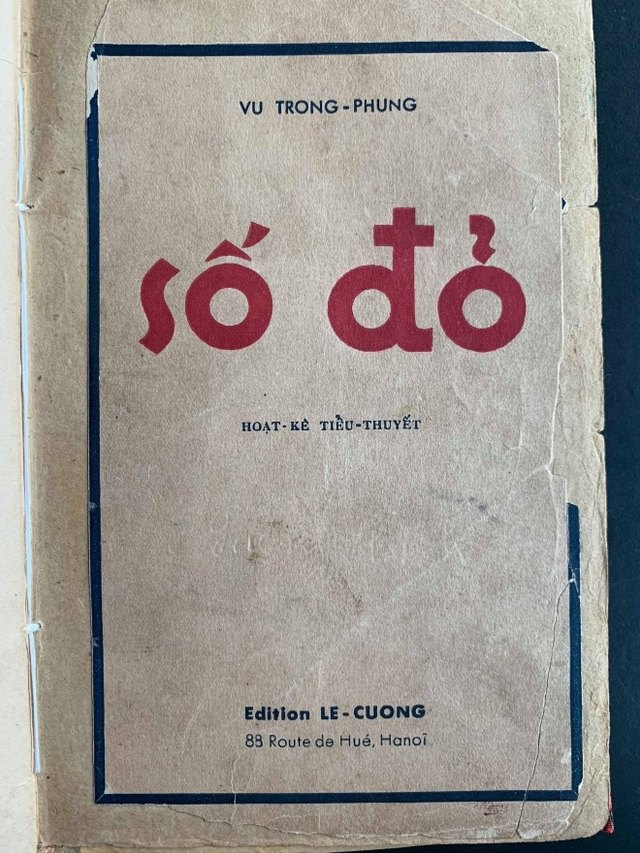

Tóm tắt sách
Số đỏ
Tác giảVũ Trọng Phụng
Đăng báo1936 · Hà Nội báo
In thành sách1938 · nhà in Lê Cường
Tóm cả cuốn trong một câu
Một kẻ bị coi là hạ lưu leo lên tận đỉnh xã hội —
và đỉnh cao nhất là lúc anh ta thua một trận quần vợt.
Ý thứ nhất
Xã hội tôn vinh cái vỏ
Xuân Tóc Đỏ đi lên bằng hiểu lầm và bằng cái mác người khác gán cho, chứ không bằng thứ gì anh ta có. Mỗi lần bị hiểu nhầm là một lần thăng chức.
Ý thứ hai
"Âu hoá" thành một trò hề
Phong trào cải cách của giới tiểu tư sản Hà Nội — y phục, thể thao, bình dân — rốt cuộc chỉ còn là hình thức. Ai cũng biết thế, và không ai nói ra.
Ý thứ ba
Đến cái chết cũng thành dịp khoe
Chương XV kể một đám tang mà cả nhà đều vui, mỗi người vui một kiểu riêng. Đoạn này nằm trong sách giáo khoa Ngữ văn 11.
Hạnh phúc của một tang gia
Lần sau thấy một đám đông cùng khen một thứ mà không ai giải thích nổi vì sao — nhớ lại sáu chữ đó.